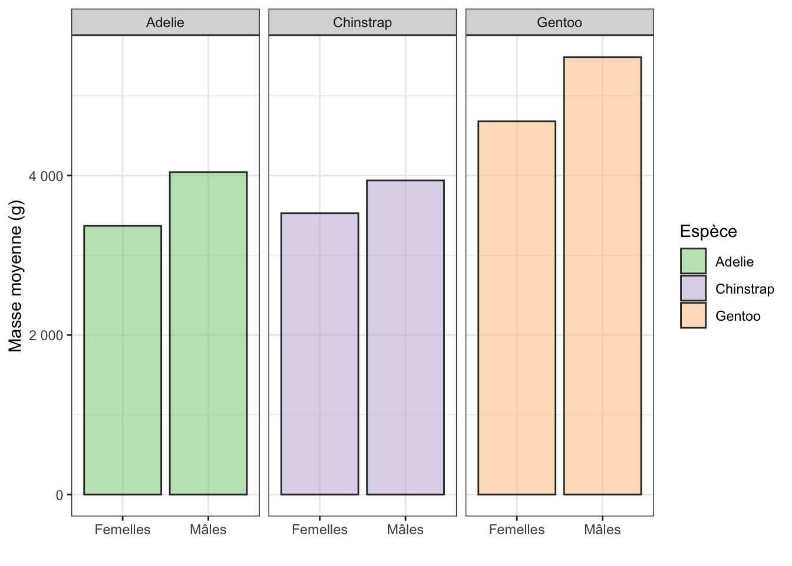

library(tidyverse)
library(palmerpenguins)
library(scales)7.1 Pré-requis
Nous avons ici besoin des packages suivants :
Pensez à les charger en mémoire si ce n’est pas déjà fait ou si vous venez de démarrer une nouvelle session de travail.
Le package scales (Wickham, Pedersen, et Seidel 2023) contient de très nombreuses fonctions particulièrement utiles pour améliorer l’aspect des légendes d’axes (par exemple, pour transformer des chiffres compris entre 0 et 1 en pourcentages, ou pour ajouter le symbole d’une devise quand l’axe renseigne sur des montants en euros ou dollars par exemple).
7.2 La notion de dispersion
Comme expliqué à la Section 6.3.1, les indices de dispersion nous renseignent sur la variabilités des données autour de la valeur centrale (moyenne ou médiane) d’une population ou d’un échantillon. L’écart-type, la variance et l’intervalle interquartile sont 3 exemples d’indices de dispersion. Prenons l’exemple de l’écart-type. Un écart-type faible indique que la majorité des observations ont des valeurs proches de la moyenne. À l’inverse, un écart-type important indique que la plupart des points sont éloignés de la moyenne. L’écart-type est une caractéristique de la population que l’on étudie grâce à un échantillon, au même titre que la moyenne. En travaillant sur un échantillon, on espère accéder aux vraies grandeurs de la population. Même si ces vraies grandeurs sont à jamais inaccessibles (on ne connaîtra jamais parfaitement quelle est la vraie valeur de moyenne \(\mu\) ou d’écart-type \(\sigma\) de la population), on espère qu’avec un échantillonnage réalisé correctement, la moyenne de l’échantillon (\(\bar{x}\) ou \(m\)) et l’écart-type (\(s\)) de l’échantillon reflètent assez fidèlement les valeurs de la population générale. C’est la notion d’estimateur, intimement liée à la notion d’inférence statistique : la moyenne de l’échantillon, que l’on connait avec précision, est un estimateur de la moyenne \(\mu\) de la population qui restera à jamais inconnue. C’est la raison pour laquelle la moyenne de l’échantillon est parfois notée \(\hat{\mu}\) (en plus de \(\bar{x}\) ou \(m\)). De même, l’écart-type \(s\) et la variance \(s^2\) d’un échantillon sont des estimateurs de l’écart-type \(\sigma\) et de la variance \(\sigma^2\) de la population générale. C’est la raison pour laquelle on les note parfois \(\hat{\sigma}\) et \(\hat{\sigma}^2\) respectivement. L’accent circonflexe se prononce “chapeau”. On dit donc que \(\hat{\sigma}\) (sigma chapeau, l’écart-type de l’échantillon) est un estimateur de l´écart-type de la population générale. Comme nous l’avons vu, les indices de dispersion doivent accompagner les indices de position lorsque l’on décrit des données, car présenter une valeur de moyenne, ou de médiane seule n’a pas de sens : il faut savoir à quel point les données sont proches ou éloignées de la tendance centrale pour savoir si, dans la population générale, les indicateurs de position correspondent ou non, aux valeurs portées par la majorité des individus.
Nous avons vu au Chapitre 6 comment calculer des indices de position et de dispersion. Tout ceci devrait donc être clair pour vous à ce stade.
7.3 La notion d’incertitude
Par ailleurs, puisqu’on ne sait jamais avec certitude si nos estimations (de moyennes ou d’écarts-types ou de tout autre paramètre) reflètent fidèlement ou non les vraies valeurs de la population, nous devons quantifier à quel point nos estimations s’écartent de celles de la population générale. C’est tout l’intérêt des statistiques et c’est ce que permettent les indices d’incertitude : on ne connaîtra jamais la vraie valeur de moyenne ou d’écart-type de la population, mais on peut quantifier à quel point nos estimations (basées sur un échantillon) sont précises ou imprécises.
Les deux indices d’incertitude les plus connus (et les plus utilisés) sont :
- l’intervalle de confiance à 95% (de la moyenne ou de tout autre estimateur ; les formules sont nombreuses et il n’est pas utile de les détailler ici : nous verrons comment les calculer plus bas)
- et l’erreur standard de la moyenne (\(se_{\bar{x}}\)), dont la formule est la suivante :
\[se_{\bar{x}} = \frac{s}{\sqrt{n}}\] avec \(s\), l’écart-type de l’échantillon et \(n\) la taille de l’échantillon.
Comme pour la moyenne, on peut calculer l’erreur standard d’un écart-type, d’une médiane, d’une proportion, ou de tout autre estimateur calculé sur un échantillon. Cet indice d’incertitude ne nous renseigne pas sur une grandeur de la population générale qu’on chercherait à estimer, mais bien sur l’incertitude associée à une estimation que nous faisons en travaillant sur un échantillon de taille forcément limitée. Tout processus d’échantillonnage est forcément entaché d’incertitude, causée entre autre par le hasard de l’échantillonnage (ou fluctuation d’échantillonnage). Puisque nous travaillons sur des échantillons forcément imparfaits, les indices d’incertitude vont nous permettre de quantifier à quel point nos estimations s’écartent des vraies valeurs de la population. Ces “vraies valeurs”, faute de pouvoir collecter tous les individus de la population, resteront à jamais inconnues.
Autrement dit…
Quand on étudie des populations naturelles grâce à des échantillons on se trompe toujours. Les statistiques nous permettent de quantifier à quel point on se trompe grâce aux indices d’incertitude, et c’est déjà pas mal !
En examinant la formule de l’erreur standard de la moyenne présentée ci-dessus, on comprend intuitivement que plus la taille de l’échantillon (\(n\)) augmente, plus l’erreur standard (donc l’incertitude) associée à notre estimation de moyenne diminue. Autrement dit, plus les données sont abondantes dans l’échantillon, meilleure sera notre estimation de moyenne, et donc, moins le risque de raconter des bêtises sera grand.
L’autre indice d’incertitude très fréquemment utilisé est l’intervalle de confiance à 95% (de la moyenne, de la médiane, de la variance, ou de tout autre estimateur calculé dans un échantillon). L’intervalle de confiance nous renseigne sur la gamme des valeurs les plus probables pour un paramètre de la population étudiée. Par exemple, si j’observe, dans un échantillon, une moyenne de 10, avec un intervalle de confiance calculé de [7 ; 15], cela signifie que, dans la population générale, la vraie valeur de moyenne a de bonnes chances de se trouver dans l’intervalle [7 ; 15]. Dans la population générale, toutes les valeurs comprises entre 7 et 15 sont vraisemblables pour la moyenne alors que les valeurs situées en dehors de cet intervalle sont moins probables. Une autre façon de comprendre l’intervalle de confiance est de dire que si je récupère un grand nombre d’échantillons dans la même population, en utilisant exactement le même protocole expérimental, 95% des échantillons que je vais récupérer auront une moyenne située à l’intérieur de l’intervalle de confiance à 95%, et 5% des échantillons auront une moyenne située à l’extérieur de l’intervalle de confiance à 95%. C’est une notion qui n’est pas si évidente que ça à comprendre, donc prenez bien le temps de relire cette section si besoin, et de poser des questions le cas échéant.
Concrètement, plus l’intervalle de confiance est large, moins notre confiance est grande. Si la moyenne d’un échantillon vaut \(\bar{x} = 10\), et que son intervalle de confiance à 95% vaut [9,5 ; 11], la gamme des valeurs probables pour la moyenne de la population est étroite. Autrement dit, la moyenne de l’échantillon (10), a de bonne chances d’être très proche de la vraie valeur de moyenne de la population générale (vraisemblablement comprise quelque part entre 9,5 et 11). À l’inverse, si l’intervalle de confiance à 95% de la moyenne vaut [4 ; 17], la gamme des valeurs possibles pour la vraie moyenne de la population est grande. La moyenne de l’échantillon aura donc de grandes chances d’être assez éloignée de la vraie valeur de la population.
La notion d’intervalle de confiance à 95% est donc très proche de celle d’erreur standard. D’ailleurs, pour de nombreux paramètres, l’intervalle de confiance est calculé à partir de l’erreur standard.
À retenir !
Les paramètres de position et de dispersion sont des caractéristiques des populations que l’on étudie. On espère pouvoir les estimer correctement grâce aux échantillons dont on dispose.
Les indices d’incertitude ne sont pas des paramètres ou des caractéristiques des populations que l’on étudie. On ne cherche donc pas à les estimer. Ils nous permettent en revanche de quantifier à quel point on se trompe en cherchant à estimer des paramètres de la population générale à partir d’estimateurs calculés sur un échantillon.
Autrement dit, calculer des estimateurs de position et de dispersion permet d’apprendre des choses au sujet des populations étudiées. Calculer des indices d’incertitude ne permet pas d’apprendre quoi que ce soit sur les populations étudiées, mais permet d’apprendre des choses sur la qualité de notre travail d’échantillonnage et d’estimation. En général, les indices d’incertitudes nous fournissent une gamme de valeurs au sein desquelles les vraies valeurs des paramètres des populations générales ont de bonnes chances de se trouver. Si on a bien travaillé, et qu’on dispose de beaucoup de données, ces gammes de valeurs seront peu étendues. Si à l’inverse, nous ne disposons que de trop peu de données, ces gammes de valeurs seront très étendues.
7.4 Calcul de l’erreur standard de la moyenne
Contrairement aux indices de position et de dispersion, il n’existe pas de fonction intégrée à R qui permette de calculer l’erreur standard de la moyenne. Toutefois, sa formule très simple nous permet de la calculer à la main quand on en a besoin grâce à la fonction summarise().
Par exemple, reprenons les données de masse corporelle des 3 espèces de manchots dans le tableau penguins. Imaginons que nous souhaitions étudier les différences de masses corporelles des 3 espèces, en tenant compte du sexe des individus. Pour chaque espèce et chaque sexe, nous allons calculer la masse moyenne des individus en grammes (variable body_mass_g). Nous prendrons soin au préalable d’éliminer les lignes pour lesquelles le sexe des individus est inconnu :
penguins |>
filter(!is.na(sex)) |>
summarise(moyenne = mean(body_mass_g, na.rm = TRUE),
.by = c(species, sex))# A tibble: 6 × 3
species sex moyenne
<fct> <fct> <dbl>
1 Adelie male 4043.
2 Adelie female 3369.
3 Gentoo female 4680.
4 Gentoo male 5485.
5 Chinstrap female 3527.
6 Chinstrap male 3939.Pour pouvoir réutiliser ce tableau, je lui donne un nom :
masses <- penguins |>
filter(!is.na(sex)) |>
summarise(moyenne = mean(body_mass_g, na.rm = TRUE),
.by = c(species, sex))Au final, on peut faire un graphique avec ces données. Puisqu’on dispose d’une variable numérique et 2 variables catégorielles, je fais le cjoix de produire un diagramme bâtons facettés :
masses |>
ggplot(aes(x = sex, y = moyenne, fill = species)) +
geom_col(color = "grey20", alpha = 0.5) +
facet_wrap(~species, nrow = 1) +
labs(x = "", y = "Masse moyenne (g)", fill = "Espèce") +
theme_bw() +
scale_fill_brewer(palette = "Accent") +
scale_y_continuous(labels = number_format()) +
scale_x_discrete(labels = c("Femelles", "Mâles"))

Vous remarquerez que :
- J’utilise
geom_col()et nongeom_bar()car j’ai déjà calculé manuellement la variable que je souhaite associer à l’axe des ordonnées - J’associe la couleur de remplissage à l’espèce, bien que ça ne soit pas indispensable puisque je fais un sous-graphique par espèce. Cela rend toutefois le graphique plus agréable et en facilite la lecture.
- Je modifie 3 échelles :
- avec
scale_fill_brewer(), je change la palette de couleur utilisée pour le remplissage des barres - avec
scale_y_continuous(), je modifie l’échelle (continue) de l’axe des ordonnées. Je fais appel à la fonctionnumber_format()du packagescalesafin d’ajouter un séparateur des milliers aux chiffres de l’axe. - avec
scale_x_discrete(), le modifie les termes qui apparaissent sur l’axe des abscisses (qui est un axe discontinu, ou catégoriel, ou discret). Les catégoriesfemaleetmalede la variablesexdu tableaupenguinssont transformées enFemellesetMâlesrespectivement
Puisque chaque barre de la Figure 7.1 correspond à une valeur de moyenne, il nous faut présenter également l’incertitude associée à ces calculs de moyennes. Pour cela, nous devons calculer l’erreur standard des moyennes :
penguins |>
filter(!is.na(sex)) |>
summarise(moyenne = mean(body_mass_g, na.rm = TRUE),
N_obs = n(),
erreur_standard = sd(body_mass_g, na.rm = TRUE) / sqrt(N_obs),
.by = c(species, sex))# A tibble: 6 × 5
species sex moyenne N_obs erreur_standard
<fct> <fct> <dbl> <int> <dbl>
1 Adelie male 4043. 73 40.6
2 Adelie female 3369. 73 31.5
3 Gentoo female 4680. 58 37.0
4 Gentoo male 5485. 61 40.1
5 Chinstrap female 3527. 34 48.9
6 Chinstrap male 3939. 34 62.1Notre tableau de statistiques descriptives possède maintenant 2 colonnes supplémentaires : le nombre d’observations (que j’ai nommé N_obs), et l’erreur standard associée à chaque moyenne, calculée grâce à la formule vue plus haut \(se_{\bar{x}} = \frac{s}{\sqrt{n}}\) (la fonction sqrt() permet de calculer la racine carrée). On constate que l’erreur standard, qui s’exprime dans la même unité que la moyenne, varie du simple au double selon les groupes. Ainsi, pour les mâles de l’espèce Chinstrap, l’incertitude est deux fois plus importante que pour les femelles de l’espèce Adélie. Cela est probablement dû en partie à des différences de tailles d’échantillons importantes entre ces 2 catégories (73 femelles Adélie contre 34 mâles Chinstrap), mais ça n’est certainement pas la seule explications. Sinon, les femelles Chinstrap auraient elles aussi une incertitude plus grande. L’incertitude reflète aussi, de façon indirecte, la variabilité de la variable étudiée.
Une fois de plus, je donne un nom à ce tableau de données pour pouvoir le réutiliser plus tard :
masses_se <- penguins |>
filter(!is.na(sex)) |>
summarise(moyenne = mean(body_mass_g, na.rm = TRUE),
N_obs = n(),
erreur_standard = sd(body_mass_g, na.rm = TRUE) / sqrt(N_obs),
.by = c(species, sex))Notez que le package ggplot2 contient une fonction permettant de calculer à la fois la moyenne et erreur standard de la moyenne d’un échantillon : mean_se(). Puisque cette fonction renvoie 3 valeurs (\(\bar{x}\), \(\bar{x} - se\) et \(\bar{x} + se\)), on utilise reframe() :
penguins |>
filter(!is.na(sex)) |>
reframe(mean_se(body_mass_g),
.by = c(species, sex))# A tibble: 6 × 5
species sex y ymin ymax
<fct> <fct> <dbl> <dbl> <dbl>
1 Adelie male 4043. 4003. 4084.
2 Adelie female 3369. 3337. 3400.
3 Gentoo female 4680. 4643. 4717.
4 Gentoo male 5485. 5445. 5525.
5 Chinstrap female 3527. 3478. 3576.
6 Chinstrap male 3939. 3877. 4001.Les résultats obtenus ne sont pas exactement au même format :
- la colonne
ycontient les valeurs de moyennes (\(\bar{x}\)) - la colonne
ymincontient la valeur de moyenne moins une fois l’erreur standard (\(\bar{x} - se\)) - la colonne
ymaxcontient la valeur de moyenne plus une fois l’erreur standard (\(\bar{x} + se\))
Notez également que contrairement aux fonctions mean() ou sd(), la fonction mean_se() n’a pas besoin qu’on lui précise na.rm = TRUE : par défaut, elle ignore les valeurs manquantes.
Il ne nous restera plus qu’à ajouter des barres d’erreur sur notre graphique pour visualiser l’incertitude associée à chaque valeur de moyenne. C’est ce que nous verrons au Chapitre 8.
7.5 Calculs d’intervalles de confiance à 95%
Comme pour les erreurs standard, il est possible de calculer des intervalles de confiance de n’importe quel estimateur calculé à partir d’un échantillon, pour déterminer la gamme des valeurs les plus probables pour les paramètres équivalents dans la population générale. Nous nous concentrerons ici sur le calcul des intervalles de confiance à 95% de la moyenne, mais nous serons amenés à examiner également l’intervalle de confiance de la médiane, puis au Chapitre 11, l’intervalle de confiance à 95% d’une différence de moyennes.
Contrairement à l’erreur standard, il n’y a pas qu’une bonne façon de calculer l’intervalle de confiance à 95% d’une moyenne. Plusieurs formules existent et le choix de la formule dépend en partie de la distribution des données (la distribution suit-elle une loi Normale ou non) et de la taille de l’échantillon dont nous disposons (\(n\) est-il supérieur à 30 ou non ?). Dans la situation idéale d’une variable qui suit la distribution Normale, les bornes inférieures et supérieures de l’intervalle de confiance à 95% sont obtenues grâce à cette formule
\[\bar{x} - 1.96 \cdot \frac{s}{\sqrt{n}} < \mu < \bar{x} + 1.96 \cdot \frac{s}{\sqrt{n}}\] Autrement dit, la vraie moyenne \(\mu\) d’une population a de bonnes chances de se trouver dans un intervalle de plus ou moins 1.96 fois l’erreur standard de la moyenne. En première approximation, l’intervalle de confiance est donc la moyenne de l’échantillon \(\bar{x}\) plus ou moins 2 fois l’erreur standard (que nous avons appris à calculer à la main un peu plus tôt). On peut donc calculer à la main les bornes inférieures et supérieures de l’intervalle de confiance ainsi :
penguins |>
filter(!is.na(sex)) |>
reframe(mean_se(body_mass_g, mult = 1.96),
.by = c(species, sex))# A tibble: 6 × 5
species sex y ymin ymax
<fct> <fct> <dbl> <dbl> <dbl>
1 Adelie male 4043. 3964. 4123.
2 Adelie female 3369. 3307. 3431.
3 Gentoo female 4680. 4607. 4752.
4 Gentoo male 5485. 5406. 5563.
5 Chinstrap female 3527. 3431. 3623.
6 Chinstrap male 3939. 3817. 4061.Ici, grâce à l’argument mult = 1.96 de la fonction mean_se() :
- la colonne
ymincontient maintenant les valeurs de moyennes moins 1.96 fois l’erreur standard - la colonne
ymaxcontient maintenant les valeurs de moyennes plus 1.96 fois l’erreur standard
Dans la pratique, puisque cette méthode reste approximative et dépend de la nature des données dont on dispose, on utilisera plutôt des fonctions spécifiques qui calculeront pour nous les intervalles de confiance à 95% de nos estimateurs. C’est ce que permet en particulier la fonction mean_cl_normal() du package ggplot2. Il est toutefois important de bien comprendre qu’il y a un lien étroit entre l’erreur standard (l’incertitude associées à l’estimation d’un paramètre d’une population à partir des données d’un échantillon), et l’intervalle de confiance à 95% de ce paramètre.
penguins |>
filter(!is.na(sex)) |>
reframe(mean_cl_normal(body_mass_g),
.by = c(species, sex))# A tibble: 6 × 5
species sex y ymin ymax
<fct> <fct> <dbl> <dbl> <dbl>
1 Adelie male 4043. 3963. 4124.
2 Adelie female 3369. 3306. 3432.
3 Gentoo female 4680. 4606. 4754.
4 Gentoo male 5485. 5405. 5565.
5 Chinstrap female 3527. 3428. 3627.
6 Chinstrap male 3939. 3813. 4065.Comme dans les tableaux précédents, 3 nouvelles colonnes ont été crées :
ycontient toujours la moyenne des températures mensuelles pour chaque aéroportymincontient maintenant les bornes inférieures de l’intervalle à 95% des moyennesymaxcontient maintenant les bornes supérieures de l’intervalle à 95% des moyennes
Pour que la suite soit plus claire, nous allons afficher et donner des noms à ces différents tableaux en prenant soin de renommer les colonnes pour plus de clarté.
Tout d’abord, nous disposons du tableau masses_se, qui contient, les masses moyennes des mâles et des femelles des 3 espèces, et les erreurs standard de ces moyennes :
masses_se# A tibble: 6 × 5
species sex moyenne N_obs erreur_standard
<fct> <fct> <dbl> <int> <dbl>
1 Adelie male 4043. 73 40.6
2 Adelie female 3369. 73 31.5
3 Gentoo female 4680. 58 37.0
4 Gentoo male 5485. 61 40.1
5 Chinstrap female 3527. 34 48.9
6 Chinstrap male 3939. 34 62.1Ensuite, nous avons produit un tableau presque équivalent que nous allons nommer masses_se_bornes et pour lequel nous allons modifier le nom des colonnes y, ymin et ymax :
masses_se_bornes <- penguins |>
filter(!is.na(sex)) |>
reframe(mean_se(body_mass_g),
.by = c(species, sex)) |>
rename(moyenne = y,
moyenne_moins_se = ymin,
moyenne_plus_se = ymax)
masses_se_bornes# A tibble: 6 × 5
species sex moyenne moyenne_moins_se moyenne_plus_se
<fct> <fct> <dbl> <dbl> <dbl>
1 Adelie male 4043. 4003. 4084.
2 Adelie female 3369. 3337. 3400.
3 Gentoo female 4680. 4643. 4717.
4 Gentoo male 5485. 5445. 5525.
5 Chinstrap female 3527. 3478. 3576.
6 Chinstrap male 3939. 3877. 4001.Nous avons ensuite calculé manuellement des intervalles de confiance approximatifs, avec la fonction mean_se() et son argument mult = 1.96. Là encore, nous allons stocker cet objet dans un tableau nommé masses_ci_approx, et nous allons modifier le nom des colonnes y, ymin, et ymax :
masses_ci_approx <- penguins |>
filter(!is.na(sex)) |>
reframe(mean_se(body_mass_g, mult = 1.96),
.by = c(species, sex)) |>
rename(moyenne = y,
ci_borne_inf = ymin,
ci_borne_sup = ymax)
masses_ci_approx# A tibble: 6 × 5
species sex moyenne ci_borne_inf ci_borne_sup
<fct> <fct> <dbl> <dbl> <dbl>
1 Adelie male 4043. 3964. 4123.
2 Adelie female 3369. 3307. 3431.
3 Gentoo female 4680. 4607. 4752.
4 Gentoo male 5485. 5406. 5563.
5 Chinstrap female 3527. 3431. 3623.
6 Chinstrap male 3939. 3817. 4061.Enfin, nous avons calculé les intervalles de confiance avec une fonction spécialement dédiée à cette tâche : la fonction mean_cl_normal(). Nous allons stocker cet objet dans un tableau nommé masses_ci, et nous allons modifier le nom des colonnes y, ymin, et ymax :
masses_ci <- penguins |>
filter(!is.na(sex)) |>
reframe(mean_cl_normal(body_mass_g),
.by = c(species, sex)) |>
rename(moyenne = y,
ci_borne_inf = ymin,
ci_borne_sup = ymax)
masses_ci# A tibble: 6 × 5
species sex moyenne ci_borne_inf ci_borne_sup
<fct> <fct> <dbl> <dbl> <dbl>
1 Adelie male 4043. 3963. 4124.
2 Adelie female 3369. 3306. 3432.
3 Gentoo female 4680. 4606. 4754.
4 Gentoo male 5485. 5405. 5565.
5 Chinstrap female 3527. 3428. 3627.
6 Chinstrap male 3939. 3813. 4065.Maintenant, si l’on compare les 2 tableaux contenant les calculs d’intervalles de confiance de la moyenne, on constate que les résultats sont très proches :
masses_ci_approx
masses_ci# A tibble: 6 × 5
species sex moyenne ci_borne_inf ci_borne_sup
<fct> <fct> <dbl> <dbl> <dbl>
1 Adelie male 4043. 3964. 4123.
2 Adelie female 3369. 3307. 3431.
3 Gentoo female 4680. 4607. 4752.
4 Gentoo male 5485. 5406. 5563.
5 Chinstrap female 3527. 3431. 3623.
6 Chinstrap male 3939. 3817. 4061.# A tibble: 6 × 5
species sex moyenne ci_borne_inf ci_borne_sup
<fct> <fct> <dbl> <dbl> <dbl>
1 Adelie male 4043. 3963. 4124.
2 Adelie female 3369. 3306. 3432.
3 Gentoo female 4680. 4606. 4754.
4 Gentoo male 5485. 5405. 5565.
5 Chinstrap female 3527. 3428. 3627.
6 Chinstrap male 3939. 3813. 4065.Les bornes inférieures et supérieures des intervalles de confiance à 95% des moyennes ne sont pas égales quand on les calcule manuellement de façon approchée et quand on les calcule de façon exacte, mais les différences sont minimes.